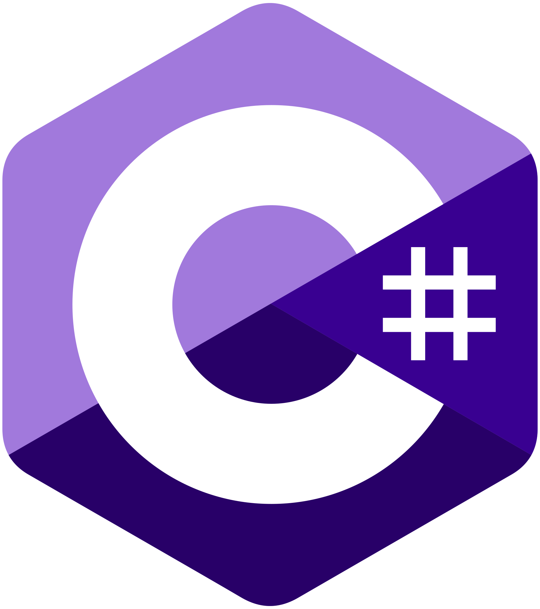
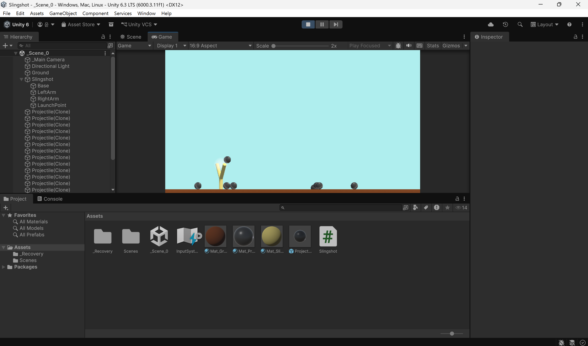

Slingshot
Unity 물리 엔진 기반 새총 발사 게임 — Mission Demolition
한양대학교 ERICA 스마트융합공학부 스마트ICT융합전공
2학년 1학기 C#게임프로그래밍 수업 과제
2학년 1학기 C#게임프로그래밍 수업 과제
Unity 6000.3
C#
Physics · Rigidbody
개인 프로젝트
About Project
본 프로젝트는 Unity 물리 엔진을 활용한 새총 발사 게임 프로토타입입니다. 마우스로 새총을 당겨 발사체를 날리고, 포물선 궤적을 그리며 날아간 발사체로 목표 지점(Goal)을 맞추는 것이 목표입니다. Rigidbody 기반 물리 시뮬레이션, 동적 카메라 추적, 궤적 시각화 등 게임 프로그래밍의 핵심 요소를 구현했습니다.
게임 방법
- 새총에 마우스를 올리면 발사 지점(LaunchPoint)이 활성화됩니다.
- 마우스를 클릭한 채로 드래그하여 발사 방향과 세기를 조절합니다.
- 마우스를 놓으면 발사체가 당긴 방향의 반대로 발사됩니다.
- 발사체가 목표 지점(Goal)에 닿으면 성공입니다.
Progress
11~13주차에 진행한 게임 플레이 화면입니다.

새총 조준 · 발사체 발사

LineRenderer 궤적 · 구름 배경 · 목표물 타격
Implementation
주요 스크립트 구성입니다.
| 스크립트 | 설명 |
|---|---|
Slingshot.cs | 마우스 드래그 기반 조준 및 발사 로직, 발사 세기 제한(SphereCollider 반경) |
FollowCam.cs | 발사체를 부드럽게 추적하는 카메라 (Lerp 기반 Easing, 동적 줌) |
ProjectileLine.cs | 발사체의 비행 궤적을 LineRenderer로 시각화 |
Goal.cs | Trigger 기반 목표 달성 판정 및 시각적 피드백 |
Cloud.cs / CloudCrafter.cs | 절차적으로 생성되는 구름 배경 (랜덤 배치 및 스케일링) |
RandomColor.cs | 오브젝트 색상 랜덤화 |
RigidbodySleep.cs | Rigidbody Sleep 상태 관리로 카메라 추적 종료 처리 |
Tech Stack
개발 환경
- Engine · Unity 6 (6000.3.11f1)
- 언어 · C#
- IDE · Visual Studio
핵심 기술
- Physics · Rigidbody, Kinematic 전환, PhysicMaterial
- Input · 마우스 이벤트(OnMouseEnter/Down/Up), ScreenToWorldPoint 좌표 변환
- Camera · Lerp 기반 Smooth Follow, Orthographic Size 동적 조절
- Rendering · LineRenderer 궤적 표현, Material 투명도 제어